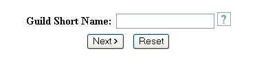
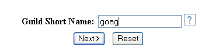

Setup a short name for your guild

This will be a username for your guild. It needs to be small with no spaces.
For example, If your guilds name is "Guild of All Guild's" make your short
name "goag". You can set your guilds full name in the next step.
 |